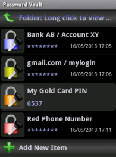
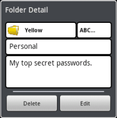

Správce Hesel
pozn.: vzhledem k výsledné velikosti aplikačního balíčku jsou screenshoty ve výchozím jazyce (tedy v angličtině)
A - Složky
- Krátký klik na složku: otevře složku s hesly:
- Krátký klik na položku s heslem: Zobrazí/Schová heslo
- Dlouhý klik na položku s heslem: Prohlížení/Editace parametrů (jméno, heslo, poznámky a barva), Smazání/Přesun položky
- Význam ikon:
(Kopírovat do schránky)
 (Generátor Hesel)
(Generátor Hesel)

- Dlouhý klik na složku: Prohlížení/Editace/Mazání parametrů složky (jméno, poznámky a barva)
- Vynutit Pozici (Pravý horní roh): (ABC...) znamená abecední pořadí (výchozí hodnota) - číslem lze vynutit absolutní pozici (pozn.: pokud zvolíte pozici, která již existuje, editovaný adresář nahradí původní na jeho pozici a původní adresář bude automaticky nastaven zpět na abecední pořadí)

B - Tlačítko Více
pozn.: pro Zobrazení/Schování spodního menu stiskněte "Menu Tlačítko"
- Změnit heslo: změnit hlavní přístupové heslo pro Správce Hesel
- Importovat ze souboru: načíst Správce ze zálohy v Import/Export adresáři aplikace
- Exportovat do souboru: exportovat (zálohovat) Správce do Import/Export adresáře aplikace
- Pozn.:
- Import/Export adresář aplikace lze definovat v Nastavení Aplikace
- můžete si vybrat mezi komprimovaným, plně šifrovaným .pwv formátem a nešifrovaným, editovatelným .xml formátem
C - Nová složka
pozn.: pro Zobrazení/Schování spodního menu stiskněte "Menu Tlačítko"
- vytvoří novou složku za použití stejného dialogu jako při funkčnosti Prohlížení/Editace/Mazání
Více...
- Všechna data obsažená ve správci hesel jsou šifrována jako jeden objekt. Všechny atributy (název, heslo, poznámky, ...) jsou tak uloženy stejně bezpečně, jako heslo samo. Takže je lze podle toho používat.
- Zapomenuté Heslo
- data jsou šifrována za použití zadaného hesla a nelze je dešifrovat jinak, než použitím správného hesla
- pokud heslo neznáte, můžete pouze stisknout Tlačítko Storno v dialogu zadání hesla (při přihlašování ke Správci) a pokračovat k možnostem funkčnosti "Pokračovat do správce hesel!"